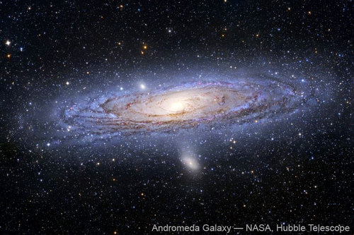
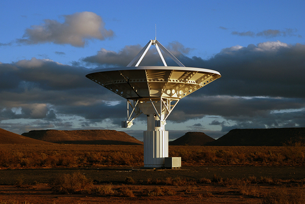

<div class="container earthandbeyond"><div id="contents" class="col-md-12 main-content"><span  class="ch-nr-3"/>
        <div  class="section"><h1 class="title" id="toc-id-0">Kyk na die ruimte</h1><div class="teachers-guide">
<p/>

<p><strong>Hoofstukoorsig</strong></p>

<p>(2 weke)</p>

<p>In Graad 6 en 7 het leeders werk behandel oor die ruimte en teleskope.</p>

<p>In Graad 6 is hulle aan teleskope bekend gestel, soos SALT en die SKA. In Graad 7 het hulle gefokus op die historiese ontwikkeling van moderne sterrekunde, van antieke waarnemings en inheemse sterreleer tot moderne wetenskaplike ontwikkelinge.</p>

<p>In hierdie hoofstuk is die fokus op die waarneming van voorwerpe in die ruimte met behulp van teleskope. Geskiedenis oor hoe vroe&#235; sterrekundiges die sterre en planete in die hemelruim gesien en ge&#239;nterpreteer het word ook ingesluit. Die leerders sal kans kry om self die Suiderkruis waar te neem en te leer van die nuutste teleskope wat in Suid-Afrika ontwikkel word.</p>

<p>Die vernaamste doelstellings van hierdie hoofstuk is om te verseker dat leerders die volgende verstaan:</p>
<ul data-class="ListBulleted"><li>Vroe&#235; kulture het die sterre en planete met die blote oog bestudeer. Hulle het sterre dikwels in patrone, genaamd konstellasies, gegroepeer. </li>
<li>Sterrekundiges gebruik deesdae teleskope om sterrestelsels, sterre en planete te bestudeer. </li>
<li>Teleskope help sterrekundiges om dowwer voorwerpe te sien, omdat hulle byna soos emmers werk om lig op te vang. </li>
<li>Suid-Afrika is gasheer vir die grootste optiese teleskoop in die Suidelike Halfrond, terwyl die grootste radio-teleskoop in die w&#234;reld, die Vierkantkilometeropstelling (Square Kilometre Array, of SKA), ook in Suid-Afrika gebou word. </li>
</ul><p>Afdeling 3.1 handel oor die vroe&#235; waarnemings van die ruimte en Afdeling 3.2 oor moderne teleskope.</p>

<p>3.1 Vroe&#235; besigtiging van die ruimte (2 uur)</p>
<table><tr><td><p><strong>Take</strong></p></td><td><p><strong>Vaardighede</strong></p></td><td><p><strong>Aanbeveling</strong></p></td></tr><tr><td><p>Aktiwiteit: Gebruik sterrekaarte om die naghemel waar te neem</p></td><td><p>waarneming, vergelyking</p></td><td><p>KABV-voorstel</p></td></tr><tr><td><p>Aktiwiteit: Bestudeer die Suiderkruis (Crux)</p></td><td><p>waarneming, vergelyking</p></td><td><p>KABV-voorstel</p></td></tr><tr><td><p>Aktiwiteit: Konstellasie-sterreleer</p></td><td><p>navorsing, mondelinge kommunikasie</p></td><td><p>Voorstel</p></td></tr></table><p>3.2 Teleskope (4 uur)</p>
<table><tr><td><p><strong>Take</strong></p></td><td><p><strong>Vaardighede</strong></p></td><td><p><strong>Aanbeveling</strong></p></td></tr><tr><td><p>Aktiwiteit: Teleskope as ligemmers</p></td><td><p>waarneming, ontleding, vergelyking</p></td><td><p>Voorstel</p></td></tr><tr><td><p>Aktiwiteit: Vergelyk jou oog met SALT</p></td><td><p>vergelyking, waarneming, berekening, skatting</p></td><td><p>Opsioneel</p></td></tr><tr><td><p>Aktiwiteit: Teken 'n teleskoop</p></td><td><p>tekenwerk, byskrifte, beskrywing</p></td><td><p>KABV-voorstel</p></td></tr><tr><td><p>Aktiwiteit: Inligtingsplakkaat oor teleskope</p></td><td><p>lys, navorsing, beskrywing, skryf</p></td><td><p>KABV-voorstel</p></td></tr><tr><td><p>Aktiwiteit: Loopbane in sterrekunde</p></td><td><p>bespreking, ontleding</p></td><td><p>KABV-voorstel</p></td></tr></table><p><strong>Let wel:</strong> Daar is 'n gevorderde uitbreidingsaktiwiteit in hierdie afdeling:</p>
<ul data-class="ListBulleted"><li>Aktiwiteit: Meet die hoekskeidingsvermo&#235; van jou oog</li>
</ul><p/>
</div><div class="note col-md-10" data-type="keyquestions"><ul data-class="ListBulleted"><li>Hoe het vroe&#235; kulture die naghemel waargeneem en ge&#239;nterpreteer?</li>
<li>Hoe help 'n teleskoop ons om meer voorwerpe in die hemelruim te sien en in groter detail? </li>
<li>Watter soorte teleskope kry ons?</li>
<li>Hoekom is Suid-Afrika 'n goeie plek om teleskope te plaas?</li>
</ul></div><div class="section"><h2 class="title" id="toc-id-1">Vroe&#235; besigtiging van die ruimte</h2><div class="teachers-guide">
<p/>

<p>In Graad 7 het leerders kennis gemaak met inheemse kennis oor die sterre en planete onder die historiese ontwikkeling van sterrekunde. Daardie afdeling het hoofsaaklik gefokus op die praktiese gebruike van sterwaarnemings, soos tydmeting en navigasie, terwyl dit leerders ook bekend gestel het aan sterreleer wat met die Maan, Melkweg en ander hemelliggame verband hou. In hierdie afdeling val die fokus op die waarneming van konstellasies (en die planete) en sterreleer wat met een konstellasie as voorbeeld verband hou.</p>

<p>'n Goeie manier om die onderwerp van die vroe&#235; besigtiging van die ruimte in te lei, is om die leerders te vra of hulle enige stories oor bekende konstellasies of die planete ken. Dit moedig bespreking aan oor konstellasies wat in die hemelruim sigbaar is en die manier waarop die sterre in werklikheid in die ruimte gerangskik is.</p>

<p/>
</div><div class="note col-md-6" data-type="newwords"><ul data-class="ListBulleted"><li>konstellasie</li>
<li>sterreleer</li>
</ul></div><p>In donker toestande, ver van die stadsligte af, is daar duisende sterre in die naghemel sigbaar. Vroe&#235; kulture om die w&#234;reld heen het in verwondering na die sterre gekyk. Hulle het die beweging van die sterre en die planete oor die hemelruim waargeneem en dit gebruik om die verloop van tyd aan te teken. Mense het dikwels die sterre wat hulle gesien het in patrone genaamd  <strong>konstellasies</strong> saamgegroepeer. Vroe&#235; kulture het dikwels die sterre en planete wat hulle in die naghemel gesien het met diere of gode geassosieer en het stories oor die patrone in die lug vertel wat van geslag tot geslag oorgedra is.</p>
<div class="note col-md-6" data-type="didyouknow">
<p>Vroe&#235; teleskope is deur seemanne en handelaars gebruik om aankomende handelskepe of seerowers te bespeur. Teleskope het ook gelei tot die eerste ho&#235;spoed-telekommunikasienetwerk, aangesien verkykers gebruik is om seine van kilometers ver af waar te neem.</p>
</div><div class="note col-md-6" data-type="takenote">
<p>Vandag is daar volgens professionele sterrekundiges 88 konstellasies, waarvan 23 in die Suidelike Halfrond sigbaar is.</p>
</div>
<p>Die sterre wat sigbaar is hang af van waar jy jou op Aarde bevind, en ook van die tyd van die jaar. Die suidelike hemelruim, wat ons van Suid-Afrika af kan sien, is vol pragtige sterre en daar is verskeie prominente konstellasies in die hemelruim sigbaar, soos die Suiderkruis, Orion en Pavo, die Pou.</p>

<p>Die volgende aktiwiteite gaan jou die kans gee om die naghemel te bestudeer en van die beroemdste suidelike konstellasies te leer ken.</p>
<div class="note col-md-6" data-type="visit">
<p>Leer hoe om die naghemel met Google Earth waar te neem.<a data-class="ExternalLink" href="http://bit.ly/16pYL3u">bit.ly/16pYL3u</a></p>
</div><div class="activity" data-type="Activity"><h1 class="title">Gebruik sterrekaarte om die naghemel waar te neem</h1><div class="teachers-guide">
<p/>

<p>In hierdie aktiwiteit gebruik leerders die sterrekaart wat verskaf word om drie konstellasies wat in September/Oktober/November in die naghemel sigbaar is, te identifiseer.   Indien jy eerder 'n sterrekaart wat spesifiek vir julle omgewing en die tyd van die jaar is wil genereer, kan jy gratis een aflaai van <a data-class="ExternalLink" href="http://bit.ly/17e1jm3">bit.ly/17e1jm3</a>. Jy kies eenvoudig die area vanwaar julle kyk deur te klik op 'select from map' of 'from database' en die ligging te kies. Di&#233; ligging word dan bewaar. Klik dan op die 'Sky chart'-skakel verder af om 'n kaart van die naghemel van julle bepaalde ligging op daardie tydstip te bekyk. Jy kan dit bewaar en vir die leerders uitdruk. Hier is byvoorbeeld skakels na sterrekaarte vir verskeie plekke in Suid-Afrika.</p>

<p>Jy kan ook hierdie aktiwiteit as 'n nag-velduitstappie organiseer. Sorg dat julle ver genoeg weg is van stads- of dorpsligte sodat  julle die sterre duideliker kan sien sonder  ligbesoedeling. Vermy verkieslik 'n volmaannag, aangesien weerkaatste lig van die Maan ook sterrekyk kan bemoeilik.</p>
<table><tr><td><p><strong>Ligging</strong></p></td><td><p><strong>Skakel</strong></p></td></tr><tr><td><p>Bloemfontein</p></td><td><p><a data-class="ExternalLink" href="http://bit.ly/17GyAAH">bit.ly/17GyAAH</a></p></td></tr><tr><td><p>Kaapstad</p></td><td><p><a data-class="ExternalLink" href="http://bit.ly/1bSSCeq">bit.ly/1bSSCeq</a></p></td></tr><tr><td><p>Durban</p></td><td><p><a data-class="ExternalLink" href="http://bit.ly/17dZZ2m">bit.ly/17dZZ2m</a></p></td></tr><tr><td><p>Johannesburg</p></td><td><p><a data-class="ExternalLink" href="http://bit.ly/1bb9mN0">bit.ly/1bb9mN0</a></p></td></tr></table><p/>
</div>
<p><strong>MATERIALE: </strong></p>
<ul data-class="ListBulleted"><li>sterrekaart</li>
<li>helder hemelruim</li>
<li>potlood</li>
<li>papier of hierdie werkboek </li>
<li>flits - opsioneel</li>
</ul><div class="note col-md-6" data-type="visit">
<p>Skep jou eie sterrekaart vir jou omgewing.<a data-class="ExternalLink" href="http://bit.ly/1a4N1nU">bit.ly/1a4N1nU</a></p>
</div>
<p>Hieronder is 'n sterrekaart van die Suidelike Halfrond as voorbeeld. Ignoreer die posisie van die Maan en planete. Jy kan jou eie, pasgemaakte sterrekaart vir 'n presiese ligging genereer met die skakel in die <strong>Besoek</strong>-kassie.</p>
<figure id="gd-idp2764912"></figure><p><strong>INSTRUKSIES:</strong></p>
<ol data-class="ListEnumerated"><li>Wag tot dit donker is en gaan buitentoe met jou sterrekaart. </li>
<li>Wag 'n paar minute sodat jou o&#235; gewoond kan raak aan die donker. </li>
<li>Probeer om die volgende konstellasies in die hemelruim te identifiseer: Pavo, die Feniks en die Suiderkruis (met groen pyle op die sterrekaart aangedui).</li>
<li>Teken 'n prent van elke konstellasie soos jy dit waarneem.</li>
<li>Kyk of jy enige planete kan sien; hulle sal nie  soos die sterre flikker nie. </li>
</ol><p><strong>SKETSE:  </strong></p>

<p>Maak jou sketse in die ruimte hieronder. As jy los papier gebruik het, plak jou prente hier vas.</p>

<p><br/><br/><br/><br/><br/><br/><br/><br/><br/><br/><br/><br/><br/><br/><br/></p>

<p/>
</div>
<div class="activity" data-type="Activity"><h1 class="title">Bestudeer die Suiderkruis (Crux)</h1><div class="teachers-guide">
<p/>

<p>In hierdie aktiwiteit sal leerders die Suiderkruis-konstellasie ten minste drie keer gedurende September en Oktober waarneem. Die leerders moet seker maak dat hulle elke aand die konstellasie op dieselfde tyd bekyk.</p>

<p/>
</div><figure><figcaption class="caption">Die Suiderkruis (regs bo) en die Wysers (links onder). </figcaption></figure><p><strong>MATERIALE: </strong></p>
<ul data-class="ListBulleted"><li>prent van die Suiderkruis-konstellasie en 'n sterrekaart</li>
<li>helder hemelruim</li>
<li>potlood</li>
<li>papier of hierdie werkboek </li>
</ul><p><strong>INSTRUKSIES:</strong></p>
<ol data-class="ListEnumerated"><li>Gaan so teen 8 nm buitentoe met jou sterrekaart (in die westelike deel van die land, nader aan Kaapstad). As jy in die oostelike deel van die land woon (nader aan Johannesburg of Durban), gaan sowat 'n uur vroe&#235;r, om 7 nm, buitentoe. </li>
<li>Wag 'n paar minute sodat jou o&#235; gewoond kan raak aan die donker. </li>
<li>Probeer om die Suiderkruis met behulp van die sterrekaart te identifiseer. </li>
<li>Teken 'n prent van die Suiderkruis en die Wysers, soos jy hulle waarneem. Skryf die datum en tyd neer, en naastenby die rigting waarin jy kyk (noord, suid, oos of wes). </li>
<li>Teken of plak jou prent (as jy los papier gebruik het) in die ruimte hieronder. </li>
<li>Herhaal die waarneming ten minste twee keer sodat jy 'n minimum van drie waarnemings op verskillende aande oor 'n paar weke het, en probeer jou bes om jou waarneming elke aand op dieselfde tyd te doen. </li>
</ol><p><strong>SKETSE:  </strong></p>

<p><br/><br/><br/><br/><br/><br/><br/><br/><br/><br/></p>

<p><strong>VRAAG:</strong></p>

<p>Wat het jy opgemerk omtrent die ori&#235;ntasie van die Suiderkruis tydens jou waarnemings?</p>

<p/><hr/><hr/><hr/><div class="teachers-guide">
<p/>

<p>Dit sal lyk of die konstellasie met verloop van tyd regsom of kloksgewys draai. Vroeg in September is die lang as bykans horisontaal in die hemelruim, maar die konstellasie draai geleidelik sodat die lang as teen vroeg November amper heeltemal afwaarts wys.</p>

<p/>
</div>
<p/>
</div>
<div class="note col-md-6" data-type="visit">
<p>Stellarium - 'n gratis, oopbron-program vir jou rekenaar om 'n realistiese, re&#235;le 3D simulasie van die naghemel te genereer.<a data-class="ExternalLink" href="http://bit.ly/1aE2lmj">bit.ly/1aE2lmj</a></p>
</div><div class="note col-md-6" data-type="didyouknow">
<p>Sommige mense glo dat die bouers van die antieke piramides van Giza in Egipte dit s&#243; geplaas het dat dit van bo af net so lyk soos die drie 'gordelsterre' van die Orion-konstellasie vanaf die Aarde lyk.</p>
</div>
<p>Alhoewel dit vanaf die aardoppervlak lyk of die sterre in patrone gerangskik is, het die sterre in 'n konstellasie in werklikheid niks met mekaar te doen nie en verskil die afstande wat hulle vanaf die Aarde is, grootliks. Wanneer ons in die aand na die sterre kyk, sien ons net 'n tweedimensionele projeksie van die hemel in 'n driedimensionele ruimte, soos jy in hierdie foto van die Orion-konstellasie kan sien.</p>
<figure><figcaption class="caption">Die Orion-konstellasie, hier te sien as drie helder sterre in die middel wat Orion se gordel vorm en die vier sterre in elke hoek. </figcaption></figure><p>Dit lyk dalk vir jou of al die sterre ewe ver vanaf die Aarde is. Dit is nie waar nie, Al die sterre is op verskillende afstande vanaf die Aarde. Die naaste ster in Orion word Bellatrix genoem en is ongeveer 250 ligjaar ver. Die verste ster, Meissa, is ongeveer 1100 ligjaar ver, ongeveer dieselfde afstand as die Orion-newel (1300 ligjaar). Maar vanaf die Aarde lyk dit of hulle 'n patroon vorm.</p>

<p>Noudat jy meer vertroud is met sommige  konstellasies in die suiderhemel, waaronder die Suiderkruis, gaan jy leer wat sommige van die vroe&#235; kulture in Suider-Afrika daarvan gedink het.</p>
<div class="note col-md-6" data-type="visit">
<p>Lees meer oor tradisionele Afrika-sterreleer.<a data-class="ExternalLink" href="http://bit.ly/H022dZ">bit.ly/H022dZ</a></p>
</div>
<p>Soos jy jou kan indink, is daar talle stories oor die konstellasies in die hemelruim. In die volgende aktiwiteit gaan jy navorsing doen om 'n voorbeeld van 'n storie te vind om vir die klas te vertel.</p>
<div class="activity" data-type="Activity"><h1 class="title">Konstellasie-sterreleer</h1><div class="teachers-guide">
<p/>

<p>Dit is 'n navorsingsaktiwiteit vir die leerders. Hulle gaan ou-ou stories oor 'n konstellasie van hul keuse bestudeer. Jy kan vir hulle boeke of gedrukte bronne gee of, as hulle toegang tot die internet het, kan hulle  'n aanlyn-soektog doen. Jy kan die leerders vra om Suid-Afrikaanse stories te kies, of jy kan hul navorsing uitbrei na ander lande om dit met die Suid-Afrikaanse sterreleer te vergelyk. Dit is jou keuse of leerders hul storie vir die klas mondelings moet aanbied of as 'n plakkaat voorl&#234;. Jy kan dit ook 'n skritelike taak maak.</p>

<p/>
</div>
<p>Die /Xam-boesmans het hulle voorgestel dat die twee Wysers van die Suiderkruis twee leeumannetjies is wat eens op 'n tyd mans was voordat hulle deur 'n towermeisie in die lug gegooi is om sterre te word. Verder het hulle  die drie helderste sterre in die Suiderkruis as leeuwyfies beskou; miskien ook vroue wat deur 'n towermeisie in sterre verander is.</p>

<p>Die Khoi-Khoi het gedink dat die Wysers die o&#235; van 'n groot dierasie is en hulle is  <em>Mura</em> genoem, wat  <em>die o&#235;</em> beteken.</p>

<p>In die Sotho-, Tswana- en Venda-kultuur word hierdie sterre <em>Dithutlwa</em> genoem, wat  <em>die Kameelperde</em> beteken. Die helder sterre van die Suiderkruis is kameelperdbulle, en die twee Wysersterre kameelperdkoeie. Die Venda noem die dowwer sterre van die Suiderkruis  <em>Thudana</em>, wat <em>die Klein Kameelperd</em> beteken. Die Sotho's het hierdie sterre gebruik om die plantseisoen aan te dui, wat begin het wanneer die kameelperdsterre net n&#225; sonsondergang naby aan die suidwestelike horison gel&#234; het.</p>

<p><strong>INSTRUKSIES:</strong></p>
<ol data-class="ListEnumerated"><li>Soek 'n storie oor 'n konstellasie wat in die Suid-Afrikaanse hemelruim voorkom. </li>
<li>Gebruik 'n Suid-Afrikaanse sterrekaart as gids om die konstellasies wat in Suid-Afrika voorkom, op te spoor. </li>
<li>Doen navorsing oor die oorsprong van die storie en enige geloofsoortuigings wat daarmee verband hou. </li>
<li>Vertel vir jou klasmaats van die konstellasie en die storie waarvan jy geleer het. </li>
<li>Die onderwyser sal op die formaat van die aanbieding besluit, wat 'n plakkaat of 'n mondelinge aanbieding kan wees. </li>
</ol><p/>
</div>
<div class="note col-md-6" data-type="visit">
<p>Lees meer oor Suid-Afrikaanse sterreleer:<a data-class="ExternalLink" href="http://bit.ly/1cbF7uu">bit.ly/1cbF7uu</a> and <a data-class="ExternalLink" href="http://bit.ly/1abUL5z">bit.ly/1abUL5z</a></p>
</div>
<p>In hul soeke na meer inligting oor planete, sterre en sterrestelsels, het mense instrumente uitgevind waarmee die hemelruim in meer detail waargeneem kon word. In die volgende afdeling gaan jy meer leer van die teleskoop: 'n uitvinding wat gebruik word om die sterre te bestudeer.</p></div><div class="section"><h2 class="title" id="toc-id-2">Teleskope</h2><div class="teachers-guide">
<p/>

<p>In Graad 6 is leerders aan teleskope soos die Suider-Afrikaanse Groot Teleskoop (SALT) en die Vierkantkilometeropstelling (SKA) bekend gestel. In hierdie afdeling leer hulle in meer besonderhede hoe teleskope werk. Die fokus is spesifiek op die vergelyking van die teleskoop met die oog. Eenvoudige straaldiagramme word gewys wat 'n verband toon met materiaal wat in Graad 8 in Energie en Verandering, Hoofstuk 4 oor Sigbare lig, behandel word.</p>

<p>Twee gevallestudies word in meer detail verken: SALT en die SKA, en die leerders sal uitvind hoekom Suid-Afrika 'n ideale plek vir professionele teleskope is.</p>

<p/>
</div><div class="note col-md-6" data-type="newwords"><ul data-class="ListBulleted"><li>hemel</li>
<li>teleskoop</li>
<li>chromatiese aberrasie</li>
<li>prim&#234;re spie&#235;l</li>
</ul></div><div class="note col-md-6" data-type="visit">
<p>Geskiedenis van die teleskoop .<a data-class="ExternalLink" href="http://bit.ly/1ibkZ9o">bit.ly/1ibkZ9o</a></p>
</div>
<p>Ongelukkig kan ons nie afgele&#235; sterre of sterrestelsels besoek om hulle direk te bestudeer nie omdat hulle so ver weg is. Sterrekundiges bestudeer wel sterre en galaksies deur die sigbare lig, radiogolwe en elektromagnetiese straling te ontleed wat van hemelliggame ontvang word. Die menslike oog kan baie ver sien. Die Andromeda-sterrestelsel, wat 2,5 miljoen ligjaar weg is, kan met die blote oog gesien word. Ons kan egter nie enige detail sien nie, want dit lyk vir ons net soos 'n kolletjie in die lug al het dit 'n deursnee van 220 000 ligjaar.</p>
<div class="note col-md-6" data-type="visit">
<p>Die pragtige naghemel.<a data-class="ExternalLink" href="http://bit.ly/1h5dy5M">bit.ly/1h5dy5M</a></p>
</div><figure><figcaption class="caption">Die Andromeda-sterrestelsel vanuit die Hubble Ruimteteleskoop gesien. Met die blote oog lyk dit net soos 'n dowwe kolletjie in die lug. </figcaption></figure><p>Lig word deur sterre en sterrestelsels in 'n reguit lyn in alle rigtings uitgestraal. As jy na 'n ster kyk, sien jy net die ligstrale wat jou o&#235; tref. In die deel oor energie en verandering het jy geleer van sigbare lig. Hoe word die ligenergie deur die ruimte oorgedra?</p>

<p/><hr/><div class="teachers-guide">
<p/>

<p>Deur straling, want elektromagnetiese golwe beweeg in 'n reguit lyn.</p>

<p/>
</div>
<p>Hoe verder weg die ster, hoe meer uitgesprei is die sterlig, en dus bereik minder van die totale lig van die ster jou o&#235;. Dit veroorsaak dat voorwerpe wat ver is, dof lyk en nie goed gesien kan word nie. As ons baie groot o&#235; gehad het, sou ons verafgele&#235; voorwerpe duideliker kon sien omdat ons o&#235; dan meer lig sou kon opvang.</p>

<p>Onthou jy toe ons 'n gaatjiekamera in Energie en Verandering gemaak het? Kyk na die volgende diagram, wat dit weer uitbeeld.</p>
<figure id="gd-idp3963344"></figure><p>Hoe word die beeld op die skerm geprojekteer?</p>

<p/><hr/><div class="teachers-guide">
<p/>

<p>Die beeld is omgekeerd, ofte wel onderstebo.</p>

<p/>
</div><div class="note col-md-6" data-type="takenote">
<p>Liggewende voorwerpe, soos die Son en ander sterre, straal lig uit. Die boom is NIE 'n liggewende voorwerp nie omdat dit nie sy eie lig uitstraal nie. Dit weerkaats lig vanaf die Son.</p>
</div>
<p>Op dieselfde manier word beelde op jou retina gevorm wanneer jy na 'n voorwerp kyk, soos die volgende illustrasie wys.</p>
<figure><figcaption class="caption">Beelde wat op die ligsensitiewe retina aan die agterkant van jou oog gevorm word, is onderstebo. </figcaption></figure><p>'n Voorwerp wat ver weg is projekteer 'n klein beeld van die voorwerp op die retina aan die agterkant van jou oog, wat dit moeilik maak om fyn detail van die beeld te sien.</p>
<figure><figcaption class="caption">Voorwerpe wat verder is kom kleiner op ons retina voor. </figcaption></figure><p>Teleskope help ons om dowwe, verafgele&#235; voorwerpe duideliker te sien, want hulle vang meer lig vanaf die voorwerpe op as wat ons o&#235; kan. Hulle vergroot ook die beeld.</p>
<figure id="gd-idp2514720"></figure><figure id="gd-idp2094928"></figure><div class="teachers-guide">
<p/>

<p>In die vorige illustrasie is die boom onderstebo in die oog aan die linkerkant, omdat beelde op die retina onderstebo is. In die regterkantse oog is die boom regop, omdat die teleskoop die beeld van die boom omdraai.</p>

<p/>
</div>
<p>Beantwoord die volgende vrae as hersiening van wat jy verlede kwartaal in Energie en Verandering geleer het:</p>

<p>Watter soort lens word in die vorige illustrasie gewys?</p>

<p/><hr/><div class="teachers-guide">
<p/>

<p>'n Bikonvekse lens.</p>

<p/>
</div>
<p>Wat gebeur met die lig wat deur die lens beweeg?</p>

<p/><hr/><hr/><div class="teachers-guide">
<p/>

<p>Dit lig word gebreek en die ligstrale konvergeer wanneer die lig van een medium na 'n ander oorgaan.</p>

<p/>
</div><div class="note col-md-6" data-type="didyouknow">
<p>Beelde wat op jou retina gevorm word, is in werklikheid onderstebo. Jou brein 'korrigeer' die beeld sodat jy dit nie eens agterkom nie.</p>
</div>
<p>Kom ons kyk presies hoe 'n teleskoop werk.</p>
<div class="note col-md-6" data-type="visit">
<p>Hoe teleskope werk.<a data-class="ExternalLink" href="http://bit.ly/1abV9B9">bit.ly/1abV9B9</a></p>
</div><div class="activity" data-type="Activity"><h1 class="title">Teleskope as ligemmers</h1><div class="teachers-guide">
<p/>

<p>In hierdie aktiwiteit gaan die leerders ontdek hoe 'n teleskoop meer lig as ons o&#235; kan opvang en ons sodoende help om voorwerpe te sien wat dof en baie ver is. Die aktiwiteit wys vir hulle hoe die teleskoop lig opvang en ook hoe die teleskoop lig vanaf verafgele&#235; voorwerpe op  'n punt fokus. In di&#233; aktiwiteit word die begrip 'fotone', of ligpakkies, vir die eerste keer gebruik. Dit is nie formeel deel van die kurrikulum vir Graad 8 nie en word dus nie in detail verduidelik nie. Tog is die idee dat 'n eindige hoeveelheid lig 'n teleskoopspie&#235;l of oog per sekonde tref nie net noodsaaklik vir hierdie aktiwiteit nie, maar ook vir 'n besef van die belang van teleskope. As jy egter die bespreking oor fotone wil uitlaat, kan jy eerder uitwei oor die peperkorrels wat ligstrale voorstel.</p>

<p/>
</div>
<p>'n Beperkte hoeveelheid lig word elke sekonde deur 'n voorwerp uitgestraal. Sulke pakkies lig word <strong>fotone</strong> genoem. Ons oog benodig elke sekonde ten minste 500 fotone, of pakkies lig, voordat ons brein besef daar is iets om te sien. In hierdie aktiwiteit gaan jy fotone van 'n verafgele&#235; galaksie met behulp van peperkorrels of kleurstrooisels voorstel.</p>

<p><strong>MATERIALE: </strong></p>
<ul data-class="ListBulleted"><li>papierbord</li>
<li>vel papier, 3 cm x 3 cm</li>
<li>potlood of pen</li>
<li>flits</li>
<li>peperkorrels of kleurstrooisels</li>
<li>houtstokkies</li>
<li>spons ('n badspons sal deug, verkieslik so breed soos die papierbord)</li>
<li>kleeflint - opsioneel</li>
<li>sk&#234;r</li>
</ul><div class="teachers-guide">
<p/>

<p>Houtsteekpenne wat gebruik word om sosaties te maak is ideaal vir hierdie aktiwiteit.</p>

<p/>
</div>
<p><strong>INSTRUKSIES:</strong></p>
<ol data-class="ListEnumerated"><li>Teken 'n prent van jou oog, met die pupil en die iris, op die vel papier. </li>
<li>Plak of plaas die prent van jou oog in die middel van 'n papierbord. Die papierbord stel 'n teleskoopspie&#235;l of -lens voor. </li>
<li>Sny die spons in 'n dun reep, ongeveer 3 cm breed en so lank soos die papierbord se deursnee. </li>
<li>Druk ses steekpenne ewe ver van mekaar in die reep spons. Sny die skerp punte af vir veiligheid. Jy gaan hierdie stuk spons later in die aktiwiteit gebruik. </li>
<li>
<p>Skyn 'n flits net bokant die prent van die oog op die bord.</p>
<figure><figcaption class="caption">Hoe nader 'n voorwerp, hoe meer lig bereik jou o&#235;. </figcaption></figure></li>
</ol><ol data-class="ListEnumerated"><li>
<p>Trek die flits stadig terug van die bord en kyk hoe die lig uitsprei en dowwer word.</p>
<figure><figcaption class="caption">Hoe verder 'n voorwerp, hoe minder lig bereik jou o&#235;. </figcaption></figure></li>
<li>Kyk hoeveel van die flitslig ontvang die oog se pupil in vergelyking met die papierbord. </li>
<li>
<p>Sit nou die flits neer en maak gereed om die peperkorrels of kleurstrooisels te gebruik. Dit stel <em>fotone</em> of <em>ligpakkies</em> voor.</p>
</li>
<li>
<p>Strooi vir een sekonde lank die 'fotone' oor die bord.</p>
<figure><figcaption class="caption">Strooi die peperkorrels of kleurstrooisels. </figcaption></figure></li>
<li>Probeer ruweg bepaal hoeveel fotone in die oog beland in vergelyking met hoeveel die papierbord tref, wat die teleskoopspie&#235;l of -lens voorstel.</li>
<li>
<p>Plaas nou die spons oor die middel van die papierbord. Die houtpenne moet reguit na bo wys. Dit stel 'n strook van die teleskoopspie&#235;l voor, en die penne stel die ligstrale van verafgele&#235; voorwerpe voor.</p>
<figure id="gd-idm16211888"><figcaption class="caption">Die houtpenne stel die ligstrale voor wat die teleskoopspie&#235;l tref. </figcaption></figure></li>
<li>Die teleskoopspie&#235;l is in werklikheid gebo&#235;. Buig die spons aan albei kante boontoe sodat die houtpenne in die middel nader aan mekaar kom. </li>
<li>
<p>Draai nou die spons om en wys die houtpenne na die prent van die oog. Die ligstrale van 'n groot strook van die spie&#235;l gaan nou by die klein pupil van die oog in.</p>
<figure><figcaption class="caption">Nou kan jy sien hoe 'n teleskoopspie&#235;l baie lig  versamel en dit op 'n klein opspoorder, soos jou oog, kan rig. </figcaption></figure></li>
</ol><p><strong>VRAE:</strong></p>
<div class="exercises"><div class="problemset"><div class="entry"><div class="problem">
          
<p/>

<p>Wat vang die meeste van die flits se lig op hoe verder die flits wegbeweeg: die oog se pupil of die papierbord?</p>

        
<p/><hr/></div><div class="solution">
<p/><p/>

        
<p>Die papierbord.</p>

        
<p/>
</div></div><div class="entry"><div class="problem">
          
<p/>

<p>Het die oog genoeg fotone in een sekonde opgevang om die lig te bespeur?</p>

        
<p/><hr/></div><div class="solution">
<p/><p/>

        
<p>Nee.</p>

        
<p/>
</div></div><div class="entry"><div class="problem">
          
<p/>

<p>Het die teleskoopspie&#235;l (papierbord) genoeg fotone opgevang vir die oog om die lig te kan bespeur?</p>

        
<p/><hr/></div><div class="solution">
<p/><p/>

        
<p>Ja.</p>

        
<p/>
</div></div><div class="entry"><div class="problem">
          
<p/>

<p>Hoe dink jy is al die lig wat die teleskoopspie&#235;l tref, gekonsentreer sodat dit by ons o&#235; of 'n klein teleskoopdetektor kan ingaan?</p>

        
<p/><hr/><hr/></div><div class="solution">
<p/><p/>

        
<p>Die teleskoopspie&#235;l het 'n gebo&#235; oppervlak en weerkaats die lig wat dit tref; sodoende fokus dit die lig op een punt.</p>

        
<p/>
</div></div></div></div>

<p/>
</div>
<div class="note col-md-6" data-type="visit">
<p>Hoe om 'n klein, maklike teleskoop te maak.<a data-class="ExternalLink" href="http://bit.ly/19YIAVH">bit.ly/19YIAVH</a></p>
</div>
<p>Teleskope het groot lense of spie&#235;ls om soveel lig as moontlik op te vang. Dit is hoe hulle dowwe voorwerpe opspoor. Teleskope konsentreer of fokus dan die lig en rig dit tot in die menslike oog sodat ons die dowwe voorwerp kan sien. Andersins rig teleskope die lig op spesiale detektors wat beelde opneem, soortgelyk aan 'n selfoonkamera.</p>
<div class="activity" data-type="Activity"><h1 class="title">Vergelyk jou oog met SALT</h1><div class="teachers-guide">
<p/>

<p>Dit is 'n <strong>opsionele</strong> aktiwiteit. In hierdie aktiwiteit werk die leerders in pare. Hulle sal waarskynlik skat dat hul reaksietyd in die omgewing van 1/10de van 'n sekonde is. Eintlik is enigiets minder as 'n sekonde in orde. Hulle gaan hierdie waarde as die oog se beligtingstyd gebruik. Die oog stuur in werklikheid elke 1/15de van 'n sekonde 'n ander beeld na die brein. Die oog het dus 1/15de van 'n sekonde tyd om lig op te vang wanneer 'n beeld gevorm word.</p>

<p/>
</div>
<p>Die Groot Suider-Afrikaanse Teleskoop (SALT) neem beelde van sommige van die verste en dofste voorwerpe in die heelal. SALT se kamera neem beelde met 'n tipiese beligtingstyd van 20 minute, waarna die kamerasluiter toemaak en die beeld op 'n rekenaar vertoon word. Hoe langer die beligting, hoe meer lig kan die teleskoop opvang om die beeld te vorm. Die menslike oog het nie 'n sluiter nie. Ons sien aanhoudend, eerder as 'n opeenvolging van stil beelde. Die oog het wel 'n soort beligtingstyd. In hierdie aktiwiteit gaan jy 'n skatting maak van jou oog se beligtingstyd deur te skat wat jou reaksietyd is en dit met SALT se tipiese beligtingstyd te vergelyk.</p>

<p><strong>MATERIALE: </strong></p>
<ul data-class="ListBulleted"><li>liniaal</li>
<li>sakrekenaar</li>
<li>potlood of pen</li>
</ul><p><strong>INSTRUKSIES:</strong></p>
<ol data-class="ListEnumerated"><li>Werk in pare vir hierdie aktiwiteit. </li>
<li>Kyk na jou maat se o&#235;. Skat die deursnee van die pupille deur 'n lininaal naby die oog te hou. Wees versigtig om nie aan jou maat se o&#235; te raak nie. </li>
<li>Skryf die deursnee van die pupil in die tabel hieronder neer. </li>
<li>Vergelyk die deursnee van die pupil met di&#233; van die Groot Suider-Afrikaanse Teleskoop (SALT), wat ongeveer 10 m in deursnee is. </li>
<li>Bereken hoeveel groter SALT as 'n oog is. (Onthou om die totale oppervlakte eerder as die deursnee te vergelyk.)</li>
<li>Een van julle hou 'n pen of potlood direk voor jou, terwyl die ander een regoor jou gaan staan en gereed maak om dit te vang. </li>
<li>Laat val die pen of potlood en kyk of jou maat dit kan vang. </li>
<li>Skat jou maat se reaksietyd. Is dit 'n sekonde? Is dit 'n tiende van 'n sekonde? Is dit 'n duisendste van 'n sekonde? </li>
<li>Herhaal stap 6 tot 8 nadat julle plekke geruil het. </li>
<li>Vul jul reaksietye in die tabel hieronder in. Dit stel die oog se beligtingstyd voor. </li>
<li>Beantwoord die vrae. </li>
</ol><p>Tabel om jou resultate neer te skryf:</p>
<table><tr><td/><td><p><strong>Oog </strong></p></td><td><p><strong>SALT</strong></p></td><td><p><strong>SALT / Oog</strong></p></td></tr><tr><td><p><strong>Deursnee van versamellens/spie&#235;l</strong></p></td><td><p>________ cm</p></td><td><p>________ cm</p></td><td/></tr><tr><td><p><strong>Oppervlakte van versamellens/spie&#235;l</strong></p></td><td><p>________ cm<sup>2</sup></p></td><td><p>________ cm<sup>2</sup></p></td><td/></tr><tr><td><p><strong>Beligtingstyd</strong></p></td><td><p>________ sekondes</p></td><td><p>________ sekondes</p></td><td/></tr></table><p>Wenk: Reken die deursnit van SALT na cm om. Reken die beligtingstyd van SALT na sekondes om. Om die berekening van die oppervlakte van die SALT-spie&#235;l te vereenvoudig, aanvaar dat dit 'n sirkel is met 'n radius van 5 m. Die oppervlakte van 'n sirkel word verkry deur die formule A = &#960;r<sup>2</sup></p>

<p><strong>VRAE:</strong></p>
<div class="exercises"><div class="problemset"><div class="entry"><div class="problem">
          
<p/>

<p>Hoekom moet jy die oppervlakte van die teleskoop en die oog se pupil eerder as hul deursnee vergelyk?</p>

        
<p/><hr/><hr/></div><div class="solution">
<p/><p/>

        
<p>Lig word oor die hele oppervlakte van jou pupil en oor die hele oppervlakte van die teleskoop versamel.</p>

        
<p/>
</div></div><div class="entry"><div class="problem">
          
<p/>

<p>Hoeveel keer meer lig vang SALT op in vergelyking met jou oog?</p>

        
<p/><hr/></div><div class="solution">
<p/><p/>

        
<p>Leerderafhanklike antwoord. Aanvaar 'n pupildeursnee van 0,5 cm en 'n SALT-spie&#235;ldeursnee van 10 m. Die antwoord is dan 4 000 000 ((1000 cm x 1000 cm) / (0,5 cm x 0,5 cm)).</p>

        
<p/>
</div></div><div class="entry"><div class="problem">
          
<p/>

<p>Wat sal met jou reaksietyd gebeur as jou oog oor 'n langer tyd lig moet opvang voor 'n beeld na die brein gestuur word?</p>

        
<p/><hr/><hr/><hr/></div><div class="solution">
<p/><p/>

        
<p>Dit sal toeneem. Let daarop dat hierdie eksperiment vir ons wys dat ons nie onmiddellik sien of reageer nie. Dit neem tyd vir die beeld van die bewegende potlood om opgeneem te word en vir ons om te reageer, dus het ons wel 'n soort beligtingstyd.</p>

        
<p/>
</div></div><div class="entry"><div class="problem">
          
<p/>

<p>Hoeveel keer kan SALT langer as jou oog belig word?</p>

        
<p/><hr/><hr/></div><div class="solution">
<p/><p/>

        
<p>Leerderafhanklike antwoord. Aanvaar 'n reaksietyd van 1/10de van 'n sekonde en 'n SALT-beligtingstyd van 20 minute. Die antwoord is dan 12 000 (20 x 60 s / 0,1 s).</p>

        
<p/>
</div></div></div></div>

<p/>
</div>

<p>Teleskope kan meer lig van dowwe en verafgele&#235; voorwerpe versamel omdat hulle 'n groter versameloppervlakte het <em>en</em> omdat hulle lig oor langer tydperke kan opvang om 'n beeld te vorm. Dit beteken dat jy met 'n teleskoop voorwerpe kan sien wat dowwer is as di&#233; wat jy met die blote oog kan sien.</p>

<p>Teleskope <strong>vergroot</strong> ook die beeld wat jy sien, en dus neem dit meer ruimte op jou retina in beslag, wat dit vir jou moontlik maak om die voorwerp duideliker te sien.</p>
<figure><figcaption class="caption">'n Konvekse (konvergerende) lens is 'n vergrootglas. Die beeld wat verkry word, is groter as die voorwerp self. Teleskope vergroot beelde van verafgele&#235; sterre en sterrestelsels. </figcaption></figure><p>Vergroting kom egter teen 'n prys. 'n Vasgestelde hoeveelheid lig word van enige voorwerp ontvang, en as die beeld vergroot word word dit dowwer omdat die lig oor 'n groter oppervlakte in die beeld versprei word. Dit is hoekom dit so belangrik is om soveel lig as moontlik op te vang.</p>
<div class="teachers-guide">
<p/>

<p><strong>Verrykingsinhoud oor nog 'n voordeel van teleskope, naamlik hoekskeidingsvermo&#235;</strong></p>

<p>Teleskope het nog 'n voordeel bo die oog. Teleskope kan beter tussen voorwerpe onderskei wat naby mekaar in die hemelruim is. Die vermo&#235; om dinge wat naby mekaar is as afsonderlike voorwerpe te sien, eerder as een smeersel of dowwe voorwerp, help om 'n duideliker beeld te gee. As ons in sterrekunde s&#234; iets is 'naby mekaar', beteken dit 'geskei deur 'n klein hoek in die hemelruim', en dus verwys sterrekundiges na die <strong>hoekskeidingsvermo&#235;</strong> van 'n teleskoop. Hoe ho&#235;r die hoekskeidingsvermo&#235; van 'n teleskoop, hoe beter kan dit voorwerpe wat naby mekaar is as individuele voorwerpe herken, en hoe skerper lyk die beeld.</p>

<p>Die beelde wat volg is foto's van dieselfde galaksies geneem met verskillende hoekskeidingsvermo&#235;ns.</p>
<figure><figcaption class="caption">Dieselfde galaksie word met toenemende hoekskeidingsvermo&#235; van (A) na (D) gesien. Die beeld word skerper hoe ho&#235;r die hoekskeidingsvermo&#235;. In (A) kan die teleskoop tussen voorwerpe onderskei wat deur 'n hoek van slegs 1/6de van 'n graad of meer geskei is. In (D) kan die teleskoop voorwerpe sien wat met 'n hoek van slegs 1/3600 van 'n graad of meer geskei is.</figcaption></figure><p>In die volgende aktiwiteit gaan leerders die hoekskeidingsvermo&#235; van die oog meet en dit dan vergelyk met di&#233; van SALT.</p>

<p><strong>Aktiwiteit: Meet die hoekskeidingsvermo&#235; van jou oog</strong></p>

<p><em><strong>Let wel</strong>: Dit is 'n <strong>gevorderde uitbreidingsaktiwiteit</strong>. Die praktiese deel van hierdie aktiwiteit is heel eenvoudig en behels die meet van afstande met 'n liniaal en maatband. Maar die aktiwiteit behels ook die berekening van 'n hoek met behulp van 'n trigonometriese identiteit wat meer gevorderd is, iets waarmee die leerders eers in die ho&#235;r grade in Wiskunde te doen sal kry. As jy hierdie aktiwiteit met die leerders wil doen kan jy hulle die mates laat neem, terwyl jy die hoeke bereken. </em></p>

<p><strong>MATERIALE: </strong></p>
<ul data-class="ListBulleted"><li>flits</li>
<li>vierkantige stuk aluminiumfoelie, groot genoeg om die voorkant van die flits te bedek - een per groep </li>
<li>speld</li>
<li>maatband</li>
<li>bordkryt</li>
<li>liniaal</li>
<li>kleeflint</li>
<li>sakrekenaar</li>
</ul><p><strong>INSTRUKSIES:</strong></p>
<ol data-class="ListEnumerated"><li>Gebruik die speld om twee redelike groot gaatjies deur die stuk foelie te druk, sowat 'n derde sentimeter uitmekaar. </li>
<li>Plaas die foelie oor die voorkant van die flitslig, en plak dit reg rondom vas, indien nodig. </li>
<li>Meet die presiese afstand tussen die speldegaatjies met 'n liniaal. </li>
<li>Skakel die flits aan. Jy behoort duidelik lig deur albei gaatjies te kan sien. </li>
<li>Terwyl een leerder in die groep met die flitslig skyn, staan die ander lede van die groep so ver as moontlik van die flits, byvoorbeeld aan die ander kant van die gang. </li>
<li>Die groepslede wat nie die flits vashou nie, beweeg nou stadig na die flits toe totdat hulle net-net kan sien dat daar twee ligpuntjies langs mekaar is, eerder as net een. Dit is die afstand waarop jy die twee voorwerpe kan begin skei. Elke leerder merk sy/haar afstand vanaf die flits met bordkryt. </li>
<li>Die groepslede wat nie die flitslig vashou nie,  meet dan die afstand vanaf die flits na elkeen se krytmerk met die maatband. </li>
<li>Een groepslid ruil om met die een wat die flitslig vashou sodat di&#233; persoon ook 'n kans kry om sy/haar afstand vanaf die flits te meet. </li>
</ol><p><strong>VRAE:</strong></p>

<p>Vul die tabel hieronder in.</p>

<p>Die hoek wat tussen die twee gaatjies onderspan word is gelyk aan 2a. Die hoek a word aangegee deur</p>

<p>a = tan-1 (0,5 x die afstand tussen die gaatjies  / die minimum afstand om die gaatjies  te onderskei)</p>
<figure id="gd-idp424992"></figure><table><tr><td><p>Afstand tussen die gaatjies (cm)</p></td><td/></tr><tr><td><p>Minimum afstand waarop jy twee gaatjies kon onderskei (cm)</p></td><td/></tr><tr><td><p>Hoek onderspan deur die gaatjies op die afstand hierbo</p></td><td/></tr></table><p>Voorbeeld van 'n berekening:</p>
<table><tr><td><p>Afstand tussen die gaatjies (cm)</p></td><td><p>0,3 cm</p></td></tr><tr><td><p>Maksimum afstand waarop jy twee gaatjies kon onderskei (cm)</p></td><td><p>10,5 m = 1050 cm</p></td></tr><tr><td><p>Hoek onderspan deur die gaatjies op die afstand hierbo</p></td><td><p>a = tan-1 (0,5 x 0,3 / 1050) = 0,009</p>

                  
<p>2a = 0,018 grade ~ 1/60ste graad.</p></td></tr></table><p>Aanvaar die kleinste hoek wat SALT kan onderskei, is ongeveer 0,00016 grade. Wat, dink jy, sal die duidelikste beeld van 'n verafgele&#235; voorwerp gee: SALT of jou oog?</p>

<p><em>Antwoord: SALT het 'n ho&#235;r hoekskeidingsvermo&#235;, dus kan dit voorwerpe isoleer wat deur kleiner hoeke geskei word as wat die oog dit kan doen; SALT sal dus duideliker beelde van 'n verafgele&#235; voorwerp oplewer. </em></p>

<p/>
</div>
<p>Hoe groter 'n teleskoop se spie&#235;l of lens, hoe beter kan dit voorwerpe wat dig op mekaar is as individuele voorwerpe sien en hoe helderder is die beelde.</p>

<p>Die belangrikste eienskap van 'n teleskoop is hoeveel lig dit kan opvang, wat afhang van die oppervlakte van die lens of spie&#235;l. Hoe groter die oppervlakte wat lig opvang, hoe meer lig versamel 'n teleskoop en hoe ho&#235;r is die skeidingsvermo&#235; (vermo&#235; om in fyn detail te sien). Die grootte van 'n teleskoop is dus baie belangriker as sy vergroting.</p>
<div class="teachers-guide">
<p/>

<p><strong>Wanbegrip van vergroting:</strong></p>

<p>Baie leerders wil weet met hoeveel 'n teleskoop 'n beeld 'vergroot', aangesien hulle dink dat d&#237;t die belangrikste eienskap van 'n teleskoop is. Teleskope vergroot wel beelde, maar dit is nie die vernaamste rede waarom hulle so nuttig is nie. 'n Vergrote dowwe beeld sal tog steeds dof wees en 'n mens sal dit nie goed kan sien nie, en 'n vergrote onduidelike beeld sal steeds onduidelik wees en ook d&#237;t sal ons nie help om duideliker te onderskei nie. Sterrekundiges is meer begaan oor hoeveel lig die teleskoop kan versamel en oor die hoekskeidingsvermo&#235;: naamlik hoe helder, duidelik en skerp die beelde wat opgelewer word. Hierdie eienskappe word bepaal deur die grootte van die versamelspie&#235;l of -lens, eerder as deur die vergroting. By teleskope is groter inderdaad beter!</p>

<p/>
</div>
<p>Noudat ons kortliks gekyk het hoe 'n teleskoop werk, gaan ons verskillende soorte teleskope bekyk, naamlik:</p>
<ul data-class="ListBulleted"><li>optiese teleskope</li>
<li>radioteleskope</li>
<li>ruimteteleskope</li>
</ul><div class="section"><h3 class="title" id="toc-id-3">Optiese teleskope</h3>
<p>Optiese teleskope versamel sigbare lig vanaf hemelliggame. Daar is twee soorte optiese teleskope.</p>
<ol data-class="ListEnumerated"><li>
<p>Refraktorteleskope gebruik <strong>lense</strong> om lig vanaf verre voorwerpe te versamel en te fokus.</p>
</li>
<li>
<p>Reflektorteleskope gebruik <strong>spie&#235;ls</strong> om die lig van verre voorwerpe te versamel en te fokus; dit word ook spie&#235;lteleskope genoem.</p>
</li>
</ol><div class="note col-md-6" data-type="visit">
<p>Die atmosfeer en optiese teleskope.<a data-class="ExternalLink" href="http://bit.ly/1bSTS1d">bit.ly/1bSTS1d</a></p>
</div></div><div class="section"><h3 class="title" id="toc-id-4">1. Refraktorteleskope</h3>
<p>Refraktorteleskope gebruik 'n konvergerende  (konvekse) lens om ligstrale te versamel en na binne te buig tot op die fokuspunt (ook brandpunt genoem) van die teleskoop. Die lens wat die lig opvang, word die objektieflens genoem.</p>
<figure id="gd-idp756928"></figure><div class="note col-md-6" data-type="takenote">
<p>Omdat astronomiese voorwerpe so ver weg is, word hul ligstrale as parallel aan mekaar beskou.</p>
</div>
<p>Sodra die lig op die fokuspunt val, word dit deur 'n ander lens, die oogstuklens, vergroot. Kyk na die optiese straaldiagraam hieronder wat 'n eenvoudige refraktorteleskoop uitbeeld.</p>
<figure id="gd-idp693152"></figure><p>Die teleskoop se objektieflens versamel en fokus die lig vanaf 'n veraf boom en vorm 'n werklike omgekeerde beeld van die boom. Die oogstuklens werk soos 'n vergrootglas en vergroot die beeld van die objektieflens om 'n groter, virtuele beeld te vorm. Dit is hierdie beeld wat ons deur die teleskoop sien.</p>

<p>Watter soort lense is die objektieflens en die oogstuklens?</p>

<p/><hr/><hr/><div class="teachers-guide">
<p/>

<p>Albei lense is konvekse lense, wat beteken hulle laat ligstrale konvergeer of saamloop.</p>

<p/>
</div><div class="note col-md-6" data-type="takenote">
<p>'n <strong>Re&#235;le beeld </strong> word re&#235;el of werklik genoem omdat ligstrale in werklikheid deur die punt beweeg waar die beeld gevorm word. 'n <strong>Virtuele beeld</strong> word s&#243; genoem omdat die ligstrale nie werklik van die beeld afkomstig is nie; dit l&#253;k net so.</p>
</div>
<p>Kyk na die prent hieronder wat wys hoe wit lig gebreek (gebuig) word as dit deur 'n prisma beweeg. Soos jy in Energie en Verandering geleer het, beweeg lig stadiger deur glas as in lug, en dus word dit gebreek.</p>
<figure id="gd-idp9172576"></figure><p>Ondergaan al die kleure dieselfde hoeveelheid ligbreking? Watter kleur word die meeste gebreek?</p>

<p/><hr/><hr/><div class="teachers-guide">
<p/>

<p>Nee, hulle word in wisselende mate gebreek en violet breek die meeste. Blouer kleure beweeg stadiger as rooier kleure, en ondergaan dus groter breking.</p>

<p/>
</div>
<p>Wit lig is 'n mengsel van al die kleure van die re&#235;nboog. Verskillende kleure word in wisselende mate gebreek terwyl hulle deur die prisma beweeg, en dus breek die wit lig in sy verskillende kleure op. Hoe dink jy be&#239;nvloed dit die beelde wat deur die  refraktorteleskoop opgelewer word?</p>

<p/><hr/><hr/><div class="teachers-guide">
<p/>

<p>Leerderafhanklike antwoord. Antwoord kan iets wees soos dat die beelde wasig lyk en dat dit lyk of die kleure geskei is.</p>

<p/>
</div>
<p>Lense word gevorm om lig teen 'n bepaalde  hoeveelheid te breek. Die verskillende kleure waaruit wit lig bestaan ondergaan elkeen 'n ander hoeveelheid breking. Dit beteken dat elke kleur op 'n effens ander afstand vanaf die objektieflens gefokus word. Elke kleur vorm sy eie beeld en is anders ingestel, wat tot 'n effens onduidelike beeld lei. Hierdie effek word <strong>chromatiese aberrasie</strong> genoem en alle lense vertoon hierdie afwyking.</p>
<figure><figcaption class="caption">Blou lig ondergaan meer breking as rooi lig en dus fokus verskillende kleure op verskillende afstande vanaf die lens. Die verskillende gekleurde beelde word bo-oor mekaar gel&#234;, maar omdat hulle nie gerig is nie, is die uiteindelike beeld vaag. </figcaption></figure><p>Die grootste nadele van refraktorteleskope is:</p>
<ol data-class="ListEnumerated"><li>Lig beweeg deur die lense in die teleskoop en dus moet die lense perfek wees. Daar mag geen lugborrels in die glas wees wat die beeld kan verwring nie. Dit is moeilik en duur om groot, perfekte lense te maak. </li>
<li>Die lig gaan deur die lense en kan dus net aan hul rande ondersteun word, waar hulle die dunste en swakste is. Dit beperk die grootte van refraktorteleskope, want 'n lens wat te groot is, sal onder sy eie gewig meegee en die beeld verwring. </li>
<li>Lense ondergaan chromatiese aberrasie, wat die beelde vervaag. </li>
</ol></div><div class="section"><h3 class="title" id="toc-id-5">2. Reflektorteleskope </h3>
<p>In die 1680's het Isaac Newton die reflektor- of spie&#235;lteleskoop uitgevind. 'n Reflektorteleskoop gebruik 'n gebo&#235; prim&#234;re spie&#235;l om lig van veraf voorwerpe te versamel en dit na 'n fokuspunt te weerkaats.</p>
<div class="note col-md-6" data-type="didyouknow">
<p>Die eerste suksesvolle reflektorteleskoop wat ooit gebou is, is die Newton-teleskoop wat vernoem is na die uitvinder daarvan, Isaac Newton.</p>
</div><div class="note col-md-6" data-type="takenote">
<p>Onthou: Vir elke straal is die invalshoek gelyk aan die weerkaatsingshoek, soos jy in Energie en Verandering geleer het.</p>
</div><figure id="gd-idp7045840"></figure><p>Daar is baie verskillende soorte reflektorteleskope. 'n <strong>Prim&#234;refokus-reflektor</strong> is die eenvoudigste soort spie&#235;lteleskoop. In hierdie ontwerp word 'n opnemer by die fokuspunt geplaas om die gefokusde beeld te verkry. In die verlede sou 'n persoon by baie groot teleskope in 'n 'waarnemingshok' sit om die beeld direk te sien of 'n kamera te beheer. Deesdae word 'n detektor egter gebruik wat van buite die teleskoop beheer word. Die posisie van die detektor word met 'n rooi kruisie in die volgende diagram aangetoon.</p>
<figure><figcaption class="caption">'n Prim&#234;refokus-reflektor met 'n detektor by die fokuspunt, gemerk met 'n X. <a data-class="ExternalLink" href="http://en.wikipedia.org/wiki/File:Prime_focus_telescope.svg">http://en.wikipedia.org/wiki/File:Prime_focus_telescope.svg</a></figcaption></figure><p>Meer komplekse ontwerpe van reflektorteleskope gebruik 'n sekond&#234;re spie&#235;ltjie om die lig na die oogstuklens te weerkaats.</p>
<ul data-class="ListBulleted"><li>
<p>'n <strong>Newton-reflektor</strong> weerkaats die lig na 'n oogstuk aan die kant van die teleskoopbuis. Hierdie ontwerp word dikwels vir amateurteleskope gebruik omdat dit makliker is om die teleskoop te gebruik as die oogstuk aan die kant van die buis is.</p>
</li>
<li>
<p>'n <strong>Cassegrain-reflektor</strong> weerkaats lig deur 'n klein gaatjie in die prim&#234;re spie&#235;l. Hierdie soort teleskoop word dikwels vir groot professionele teleskope gebruik, aangesien swaar detektors aan die onderkant van die teleskoop geplaas kan word. Indien herstel nodig is, kan dit maklik bereik word, en dit bring ook mee dat die gewig van die detektors nie die teleskoopbuis be&#239;nvloed nie.</p>
</li>
</ul><div class="note col-md-6" data-type="didyouknow">
<p>Die Cassegrain-reflektor is vernoem na die ontwerp vir 'n reflektorteleskoop wat in 1672 gepubliseer is en aan Laurent Cassegrain toegeskryf word.</p>
</div><figure><figcaption class="caption">'n Groep Newton-teleskope. </figcaption></figure><p>Die volgende straaldiagramme toon die verskil tussen 'n Newton- en 'n Cassegrain-reflektor.</p>
<figure><figcaption class="caption">Straaldiagramme vir 'n paar voorbeelde van reflektorteleskope. Die Newton-reflektor word dikwels in amateurteleskope gebruik. Die Cassegrain-teleskoop word eerder by groot sterrewagte gebruik. </figcaption></figure><figure><figcaption class="caption">Die SAAO se 1,9 m-reflektorteleskoop. Detektors word aan die onderkant van die teleskoop op die Cassegrain-fokus vasgeskroef  (metaalhouers onder die oranje buise). (Bron: SAAO).</figcaption></figure><p>Die sekond&#234;re spie&#235;l in 'n reflektorteleskoop moet baie klein wees. Hoekom dink jy is dit so?</p>

<p/><hr/><hr/><div class="teachers-guide">
<p/>

<p>Sodat dit so min as moontlik ligstrale tussen die veraf voorwerp en die prim&#234;re spie&#235;l blokkeer.</p>

<p/>
</div>
<p>Dink jy reflektorteleskope is onderhewig aan chromatiese aberrasie? Hoekom of hoekom nie?</p>

<p/><hr/><hr/><div class="teachers-guide">
<p/>

<p>Nee, hulle is nie, want hulle gebruik nie 'n lens om lig te versamel en te fokus nie, maar eerder spie&#235;ls wat lig weerkaats.</p>

<p/>
</div>
<p>Die voordele van 'n reflektorteleskoop is onder meer:</p>
<ol data-class="ListEnumerated"><li>Die hele glas van die spie&#235;l hoef nie perfek te wees nie, net die oppervlak moet vlekkeloos wees. </li>
<li>Die spie&#235;l kan oor sy hele rugkant ondersteun word sodat dit nie deursak nie. </li>
<li>Om groot spie&#235;ls te maak is makliker en goedkoper as om groot lense te maak. </li>
<li>Hulle is nie onderhewig aan chromatiese aberrasie nie. </li>
</ol><p>Optiese teleskope op die grond hou egter enkele nadele in:</p>
<ol data-class="ListEnumerated"><li>Dit kan slegs in die aand gebruik word.</li>
<li>Dit kan nie in slegte weer (as dit re&#235;n, bewolk is of sneeu, ens.) gebruik word nie. </li>
</ol><p>Die beste plek om optiese teleskope te plaas, is bo-op afgele&#235; berge. Bespreek in die klas hoekom julle dink dit die geval is. Maak 'n paar aantekeninge in die ruimte hieronder.</p>

<p/><hr/><hr/><hr/><hr/><hr/><div class="teachers-guide">
<p/>

<p>Dit is 'n goeie geleentheid om die leerders te laat nadink oor die toestande wat nodig is om baie dowwe voorwerpe goed te kan waarneem. Dalk sal jy die bespreking moet lei. Hulle moet kan insien dat dit noodsaaklik is om soveel as moontlik lig van die voorwerp te versamel, met 'n minimum verstrooide lig van ander bronne. Jy kan begin om te vra hoe die lug lyk as 'n mens tussen berge is en ook hoe die weer daar is, en om dan te vergelyk hoe helder die lug bo-op 'n berg is in vergelyking met die lug in die omgewing van 'n stad. Moontlike antwoorde sluit in:</p>
<ol data-class="ListEnumerated"><li>Hooggele&#235; teleskope is ver weg van ligbesoedeling in groot stede en dorpe.</li>
<li>Hulle l&#234; bokant die stof en ander soorte atmosferiese besoedeling. </li>
<li>Hulle is bokant lae wolke. </li>
<li>Die lug is dunner (ho&#235;r bo seevlak) en daar is dus minder absorpsie van die sterlig deur die Aarde se atmosfeer. </li>
<li>Daar is minder lugturbulensie, wat tot skerper beelde lei. </li>
</ol><p/>
</div>
<p>Die grootste teleskope ter w&#234;reld vandag is almal reflektorteleskope. In die volgende afdeling gaan jy leer van een van die gr&#243;&#243;t reflektorteleskope in die w&#234;reld, wat hier &#237;n Suid-Afrika gele&#235; is.</p></div><div class="section"><h3 class="title" id="toc-id-6">SALT</h3><div class="note col-md-6" data-type="newwords"><ul data-class="ListBulleted"><li>SALT</li>
</ul></div><figure><figcaption class="caption">SALT net buite Sutherland. </figcaption></figure><div class="note col-md-6" data-type="visit">
<p>Die SALT webtuiste.<a data-class="ExternalLink" href="http://bit.ly/1fSW6CH">bit.ly/1fSW6CH</a></p>
</div>
<p>Die Suider-Afrikaanse Groot Teleskoop (SALT) is die grootste optiese teleskoop in die Suidelike Halfrond en een van die grootstes ter w&#234;reld. SALT is in 2005 voltooi en staan op die Karooveld in die Noord-Kaap, naby die dorp Sutherland. Sterrekundiges gebruik teleskope soos SALT om planete, sterre en galaksies te bestudeer. SALT kan lig van dowwe of veraf voorwerpe in die Heelal sien wat 'n miljard keer te dof is om deur die blote oog waargeneem te word.</p>

<p>SALT het 'n groot spie&#235;l wat lig opvang. SALT se prim&#234;re spie&#235;l is 'n seshoek van 11,1 m by 9,8 m en bestaan uit 91 individuele seshoekige spie&#235;ls met 'n ingeskrewe deursnee van 1,2 m elk. SALT is 'n prim&#234;refokus-reflektor. Wat beteken dit?</p>

<p/><hr/><hr/><div class="teachers-guide">
<p/>

<p>Dit het nie 'n sekond&#234;re spie&#235;l wat lig na 'n oogstuk weerkaats nie, maar wel 'n detektor by die fokuspunt.</p>

<p/>
</div><figure><figcaption class="caption">SALT se reuse spie&#235;l wat uit 91 individuele spie&#235;ls bestaan. </figcaption></figure><div class="note col-md-6" data-type="visit">
<p>Die Suider-Afrikaanse Groot Teleskoop (SALT)(video).<a data-class="ExternalLink" href="http://bit.ly/17e0xFy">bit.ly/17e0xFy</a></p>
</div>
<p>SALT het nie 'n teleskoopbuis nie, maar 'n netwerk van metaalstutte wat die opspoorder en instrumentlading bo-op die teleskoop ondersteun. Die hele teleskoopstruktuur weeg 85 ton. Die instrumentlading bevat detektors wat beelde van die naghemel neem.</p>

<p>Sterre beweeg gedurende die nag, net soos die Son in die dag oor die hemelruim beweeg. Die teleskoop moet die sterre volg terwyl hulle beweeg. Die opspoorder bo-op SALT word gebruik om die drywende sterre te volg en neem die detektors mee soos dit die sterre volg.</p>
<figure><figcaption class="caption">Die struktuur van SALT.(Bron: SALT)</figcaption></figure><p>SALT word tans gebruik om sterre te bestudeer, spesifiek bin&#234;re sterrestelsel waar twee sterre om mekaar wentel. Sterrekundiges gebruik ook die teleskoop om galaksies en hewige ontploffings in die heelal, genaamd supernovas, te bekyk, asook gammastraaluitbarstings, wat plaasvind wanneer massiewe sterre aan die einde van hul leeftyd ontplof. SALT kyk op megaskaal na die Heelal om vrae te beantwoord soos hoe die Heelal ontstaan het, en wat in die toekoms daarmee gaan gebeur.</p>

<p>Die Karoo is die ideale plek vir SALT, omdat dit ver weg is van dorpe en stede en daar dus baie min ligbesoedeling is. Die gebied is ook hoog gele&#235;, droog, en daar is geen uiterste weerstoestande soos vloede of storms nie. Al is die sterrewag so afgele&#235;, is daar goeie infrastruktuur, soos paaie en elektrisiteit, in die omgewing van Sutherland.</p></div><div class="section"><h3 class="title" id="toc-id-7">Radioteleskope</h3><div class="note col-md-6" data-type="newwords"><ul data-class="ListBulleted"><li>antenna</li>
<li>ontvanger</li>
<li>versterker</li>
<li>SKA</li>
</ul></div><div class="note col-md-6" data-type="visit">
<p>Wat is 'n radioteleskoop?<a data-class="ExternalLink" href="http://bit.ly/1a4LbTW">bit.ly/1a4LbTW</a></p>
</div>
<p>Radiogolwe is 'n soort elektromagnetiese straling (of lig) wat 'n mens nie met die blote oog kan sien nie. Hulle het baie lang golflengtes in vergelyking met optiese lig. Pers lig het byvoorbeeld 'n golflengte van 400 nm en  rooi lig 'n golflengte van 700 nm. Radiogolwe is veel langer met golflengtes van ongeveer een millimeter tot honderde meter.</p>
<div class="note col-md-6" data-type="takenote">
<p>Onthou jy nog wat jy in Energie en Verandering oor golflengte geleer het? Die golflengte is die afstand tussen twee ooreenstemmende punte op twee opeenvolgende golwe.</p>
</div>
<p>Radioteleskope bespeur radiogolwe wat van verafgele&#235; voorwerpe afkomstig is. Radioteleskope hou verskeie voordele bo optiese teleskope in. Hulle kan in slegte weer gebruik word, aangesien radiogolwe nie deur wolke versper word nie. Verder kan hulle ook in die dag &#233;n in die nag gebruik word.</p>

<p>Talle voorwerpe in die ruimte straal radiogolwe uit, byvoorbeeld party sterrestelsels en sterre, asook newels, wat reusagtige wolke stof en gas is waar sterre gebore word. Sommige voorwerpe straal radiogolwe uit, maar nie optiese lig nie, en dus kry 'n mens 'n heeltemal ander beeld van ons Heelal deur die hemelruim op radiogolflengte te bekyk. As jou o&#235; saans radiogolwe kon waarneem, eerder as wit lig, sou jy nie puntige sterre sien nie, maar verafgele&#235; stervormende streke, helder galaksies en pragtige reusewolke wat uitgedoofde sterre omring.</p>
<div class="note col-md-6" data-type="didyouknow">
<p>Die Groot Millimeter/sub-millimeter Opstelling in Atacama (ALMA) is 'n nuwe radioteleskoop in die Atacama-woestyn in Chili. Dit sal 'n heel nuwe 'venster' na die Heelal open en wetenskaplikes in staat stel om ons kosmiese oorsprong na te vors.</p>
</div><div class="note col-md-6" data-type="visit">
<p>Kyk na 'n video van sommige van die jongste navorsing en beelde wat deur ALMA vrygestel is.<a data-class="ExternalLink" href="http://bit.ly/17GzMnB">bit.ly/17GzMnB</a></p>
</div><figure><figcaption class="caption">'n Optiese (wit) en radio- (oranje) beeld van galaksie NGC 1316. Die radio-uitstraling strek oor een <em>miljoen</em> ligjaar en verswelg die optiese lig in die middel. </figcaption></figure><div class="note col-md-6" data-type="didyouknow">
<p>Steroorblyfsels wat baie vinnig roteer, genaamd pulsars, is in 1967 met behulp van 'n radioteleskoop ontdek. Sterrekundiges het aanvanklik vermoed dat die re&#235;lmatige radiogolf-impulse dalk seine van buiteaardse beskawing is, maar gou besef dit is nie die geval nie.</p>
</div>
<p>Radioteleskope lyk gewoonlik soos groot skottels. Die <strong>skottel</strong> of <strong>antenna</strong> tree soos die prim&#234;re spie&#235;l in 'n reflektorteleskoop op, versamel die radiogolwe en weerkaats dit na 'n kleiner spie&#235;l, wat dan die radiogolwe na 'n radiogolf-detektor weerkaats. Radiogolfdetektors word <strong>ontvangers</strong> genoem. 'n <strong>versterker</strong> versterk die sein en stuur dit na 'n rekenaar, wat die inligting van die ontvanger verwerk om kleurbeelde te skep wat ons kan sien.</p>
<figure id="gd-idp7398400"></figure><div class="note col-md-6" data-type="takenote">
<p>Die sensitiwiteit van 'n radioteleskoop hang af van die totale oppervlakte van die versamelskottel en die sensitiwiteit van die radio-ontvanger. Ten einde skerp radiobeelde op te lewer wat vergelykbaar is met beelde van optiese teleskope, moet 'n radioteleskoop baie groter as 'n optiese teleskoop wees.</p>
</div><div class="teachers-guide">
<p/>

<p><strong>Agtergrondinligting</strong></p>

<p>Radioteleskope is groter omdat hoekskeidingsvermo&#235; nie net van die deursnee van die versamelspie&#235;l afhanklik is nie, maar ook van die golflengte van die lig. Die minimum hoek waarteen twee voorwerpe in die hemelruim onderskei kan word, is eweredig aan die golflengte van die bepaalde lig en omgekeerd eweredig aan die deursnee van die versamelspie&#235;l. Omdat radiogolwe baie langer as sigbare lig is, moet die deursnee van die versamelspie&#235;l dienooreenkomstig toeneem om te kompenseer indien dieselfde hoekskeidingsvermo&#235; verkry wil word.</p>

<p/>
</div>
<p>Radioteleskope moet ver van stede en dorpe geplaas word, aangesien mensgemaakte radiosteuring met die teleskoop se waarnemings kan inmeng.</p>
<figure><figcaption class="caption">Deel van die KAT-7-radioteleskoopopstelling in die Noord-Kaap.</figcaption></figure></div><div class="section"><h3 class="title" id="toc-id-8">MeerKAT en die SKA</h3><div class="note col-md-6" data-type="didyouknow">
<p>Die SKA se sentrale rekenaar het die verwerkingskapasiteit van ongeveer een honderd miljoen rekenaars. Die skottels van SKA sal tien keer die globale internetverkeer oplewer.</p>
</div>
<p>Die MeerKAT-radioteleskoop word tans in die Noord-Kaap opgerig. MeerKAT, wat volgens beplanning in 2016 voltooi sal wees, sal 64 radioskottels h&#234; wat elk 13,5 m in deursnee is. Die MeerKAT-opstelling sal die grootste en sensitiefste radioteleskoop in die Suidelike Halfrond wees totdat die Vierkantkilometeropstelling (SKA) in ongeveer 2024 klaar is.</p>
<div class="note col-md-6" data-type="visit">
<p>'n Video oor die SKA.<a data-class="ExternalLink" href="http://bit.ly/1aE3b2A">bit.ly/1aE3b2A</a></p>
</div><figure><figcaption class="caption">Die KAT-7-toetsopstelling in die Noord-Kaap is 'n toetsopstelling vir die groter MeerKAT-opstelling. </figcaption></figure><p>Die SKA sal die sterkste teleskoop ooit wees. Dit sal 'n totale versameloppervlakte van een vierkante kilometer h&#234;. Dit sal 3000 radioskottels h&#234;, elk ongeveer 15 m breed, wat saam as een groot teleskoop sal optree. Benewens die 3 000 radioskottels sal daar ook twee ander soorte radiogolfdetektors wees.</p>

<p>Talle verskillende lande werk saam om die SKA te bou en dit te finansier. Ten minste dertien lande en bykans 100 organisasies is reeds betrokke en meer sluit steeds by die projek aan. Die grootste deel van die SKA sal in Suid-Afrika gele&#235; wees. Daar sal egter ook oprigtings in Australi&#235; wees en stasies in agt Afrika-vennootlande, naamlik Botswana, Ghana, Kenia, Madagaskar, Mauritius, Mosambiek, Namibi&#235; en Zambi&#235;.</p>
<div class="note col-md-6" data-type="didyouknow">
<p>Die data wat binne een dag deur SKA ingesamel gaan word, sal ongeveer twee miljoen jaar neem om op 'n ipod terug te speel.</p>
</div><figure><figcaption class="caption">Die ligging van SKA in Suid-Afrika en ander Afrikalande. </figcaption></figure><div class="note col-md-6" data-type="visit">
<p>Lees meer oor die SKA op die web.<a data-class="ExternalLink" href="http://bit.ly/H02OHY">bit.ly/H02OHY</a></p>
</div>
<p>MeerKAT en SKA sal gebruik word om ondersoek in te stel na die manier waarop sterrestelsels met verloop van tyd verander, ons begrip van gravitasie (swaartekrag), die oorsprong van kosmiese magnetisme, hoe die heel eerste sterre gevorm is, ander planete om ander sterre en of ons alleen in die heelal is.</p>
<figure><figcaption class="caption">Een van die SKA-skottels</figcaption></figure><div class="note col-md-6" data-type="didyouknow">
<p>SKA sal so sensitief wees dat dit TV-seine van planete wat om ander sterre wentel, sal kan opvang.</p>
</div><div class="note col-md-6" data-type="didyouknow">
<p>By sterrewagte vir radiosterrekunde word dieselmotors in die omgewing van die teleskope gebruik, omdat die ontsteking van die vonkproppe in petrolvoertuie die  radiowaarnemings kan versteur.</p>
</div><div class="activity" data-type="Activity"><h1 class="title">Loopbane in sterrekunde </h1><div class="teachers-guide">
<p/>

<p>In hierdie aktiwiteit gaan leerders verskillende loopbane in sterrekunde bespreek. Benewens sterrekundiges benodig fasiliteite soos SALT en SKA ook ingenieurs, tegnici, rekenaarwetenskaplikes, projekbestuurders, menslikehulpbron-beamptes, rekenmeesters en administratiewe personeel. Dit is 'n kreatiewe en uitdagende aktiwiteit vir die leerders om hulle in te dink watter bydrae h&#250;lle tot sterrekunde in Suid-Afrika kan lewer.</p>

<p/>
</div>
<p><strong>INSTRUKSIES:</strong></p>

<p>Bespreek in die klas met jou onderwyser en klasmaats watter soort loopbane jy dink daar in sterrekunde in Suid-Afrika beskikbaar is danksy die oprigting van SALT en MeerKAT/SKA. Dink na oor en bespreek die vaardighede wat nodig is vir elke rol wat genoem word.</p>
<div class="note col-md-6" data-type="takenote">
<p>Loopbane is nie beperk tot sterrekundiges nie: ingenieurs, rekenaarwetenskaplikes en administratiewe personeel is nodig om die teleskope te bestuur.</p>
</div>
<p/>
</div>
<div class="note col-md-6" data-type="visit">
<p>Is jy nuuskierig oor die heelal, maar weet nie waar om te begin nie? Di&#233; stapsgewyse gids wys jou hoe om 'n fantastiese amateursterrekundige te word.<a data-class="ExternalLink" href="http://www.unawe.org/awesome/">http://www.unawe.org/awesome/</a></p>
</div><div class="activity" data-type="Activity"><h1 class="title">Teken 'n teleskoop</h1><div class="teachers-guide">
<p/>

<p>In hierdie aktiwiteit kies die leerders 'n teleskoop waarop hulle wil fokus en teken 'n prent van daardie teleskoop. Hulle moet byskrifte verskaf en beskryf wat elke deel doen. Hulle kan die voorbeelde in die hoofstuk gebruik of aanlyn soek na voorbeelde van optiese en radio-teleskope.</p>

<p/>
</div>
<p><strong>MATERIALE: </strong></p>
<ul data-class="ListBulleted"><li>papier</li>
<li>potlode of kryte</li>
</ul><p><strong>INSTRUKSIES:</strong></p>
<ol data-class="ListEnumerated"><li>Kies 'n optiese of 'n radio-teleskoop en teken 'n prent van daardie teleskoop. </li>
<li>Verskaf byskrifte vir die dele van die teleskoop en beskryf wat elke deel doen. </li>
</ol><p/>
</div></div><div class="section"><h3 class="title" id="toc-id-9">Ruimteteleskope</h3><div class="note col-md-6" data-type="visit">
<p>Hoeveel mense is op die oomblik in die ruimte? Kyk hier.<a data-class="ExternalLink" href="http://www.howmanypeopleareinspacerightnow.com/">http://www.howmanypeopleareinspacerightnow.com</a></p>
</div>
<p>Radiogolwe en sigbare lig maak deel uit van die sogenaamde elektromagnetiese spektrum van lig. Daar is ander vorms van lig met ander  golflengtes wat ons nie met die blote oog kan sien nie, soos X-strale en ultraviolet en infrarooi lig.</p>
<div class="note col-md-6" data-type="takenote">
<p>Jy sal meer oor die verskillende soorte lig leer as jy in Graad 10 voortgaan met Fisiese Wetenskappe.</p>
</div>
<p>Die Aarde se atmosfeer versper X-strale en ook ultraviolet en infrarooi lig en keer dat dit die oppervlak bereik. Ons kan dus hierdie soort lig vanaf sterre en sterrestelsels slegs met teleskope in die ruimte waarneem. Daarom word daar nou X-straalteleskope en infrarooiteleskope in die ruimte geplaas.</p>
<figure><figcaption class="caption">'n Prent van 'n X-straalteleskoop genaamd XMM-Newton. </figcaption></figure><div class="note col-md-6" data-type="didyouknow">
<p>Die Hubble-ruimteteleskoop is vernoem na Edward Hubble wat beskou word as een van die belangrikste kosmolo&#235; van die 20ste eeu. Hubble het ontdek dat daar galaksies buiten ons eie is en het gehelp om te bevestig dat die heelal aan die uitdy is.</p>
</div>
<p>Die voordele van ruimteteleskope is dat hulle die hele hemelruim kan waarneem en sowel nag as dag kan werk. Beelde wat met ruimteteleskope geneem word is baie skerper as beelde van teleskope op die grond, aangesien die beelde nie onduidelik of vaag raak weens turbulensie in die Aarde se atmosfeer nie. Dit is hoekom die Hubble-ruimteteleskoop se beelde so gedetailleerd is, al is dit 'n redelike klein reflektorteleskoop. Die groot nadeel van ruimteteleskope is die koste daarvan en die feit dat dit baie moeilik is om herstelwerk te doen as iets verkeerd loop.</p>
<div class="note col-md-6" data-type="visit">
<p>Die Hubble-ruimteteleskoop (video's)<a data-class="ExternalLink" href="http://bit.ly/1873WQd">bit.ly/1873WQd</a> en<a data-class="ExternalLink" href="http://bit.ly/1abWIiG">bit.ly/1abWIiG</a> en 'n paar van Hubble se beste beelde <a data-class="ExternalLink" href="http://bit.ly/1deIJLS">bit.ly/1deIJLS</a></p>
</div><figure><figcaption class="caption">Die Hubble-ruimteteleskoop se versamelspie&#235;l het 'n deursnee van 2,4 m. </figcaption></figure><div class="note col-md-6" data-type="didyouknow">
<p>NASA beplan tans die opvolger van die Hubble-ruimteteleskoop, naamlik die James Webb-ruimteteleskoop. Dit sal in 2018 gelanseer word.</p>
</div><div class="note col-md-6" data-type="visit">
<p>Leer meer van die James Webb-ruimteteleskoop (video).<a data-class="ExternalLink" href="http://bit.ly/1h5hUd9">bit.ly/1h5hUd9</a></p>
</div><div class="activity" data-type="Activity"><h1 class="title">Inligtingsplakkaat oor teleskope</h1><div class="teachers-guide">
<p/>

<p>In hierdie aktiwiteit gaan die leerders 'n plakkaat maak oor 'n spesifieke teleskoop waaroor hulle navorsing gedoen het. Hulle kan enige soort teleskoop kies, hetsy 'n grondgebaseerde of 'n ruimteteleskoop. Hulle moet beskryf hoe die betrokke teleskoop werk en voorbeelde gee van die soort sterrekunde waarvoor die teleskoop gebruik word.</p>

<p/>
</div>
<p><strong>MATERIALE: </strong></p>
<ul data-class="ListBulleted"><li>papier</li>
<li>potlode of kryte</li>
<li>prente afgelaai vanaf die internet of uit boeke gekopieer - opsioneel</li>
</ul><p><strong>INSTRUKSIES:</strong></p>
<ol data-class="ListEnumerated"><li>Kies 'n teleskoop waaroor jy 'n plakkaat wil maak. Dit kan 'n grondgebaseerde of 'n ruimteteleskoop wees. </li>
<li>Beskryf die teleskoop en verduidelik hoe dit werk. Sluit 'n diagram of prent van die teleskoop in, en verskaf byskrifte vir die hoofdele daarvan op jou plakkaat. </li>
<li>Gee 'n lys voorbeelde van die wetenskap waarvoor die teleskoop gebruik word.</li>
<li>Lys ook 'n paar voordele en nadele van die soort teleskoop wat jy gekies het. </li>
</ol><p/>
</div>
<div class="note col-md-6" data-type="visit">
<p>Wetenskap gaan oor nuuskierigheid, ontdekking en innovasie!<a data-class="ExternalLink" href="http://bit.ly/18GzSyZ">bit.ly/18GzSyZ</a></p>
</div><div class="note col-md-10" data-type="keyconcepts"><ul data-class="ListBulleted"><li>Vroe&#235; kulture het die sterre bestudeer en dit in patrone of konstellasies saamgegroepeer. </li>
<li>Teleskope maak dit vir sterrekundiges moontlik om veraf, dowwe voorwerpe in meer detail te sien. </li>
<li>Die prestasie van 'n teleskoop word gemeet aan die hoeveelheid lig wat dit kan versamel. Groter teleskope kan meer lig versamel en sien fyner detail as kleiner teleskope. </li>
<li>Optiese teleskope neem optiese lig vanaf afgele&#235; voorwerpe waar. </li>
<li>Die meeste moderne optiese teleskope gebruik spie&#235;ls om die lig van afgele&#235; voorwerpe te versamel en te fokus. </li>
<li>Radioteleskope versamel en fokus radiogolwe wat van afgele&#235; voorwerpe in die ruimte uitgestraal word. </li>
<li>Een van die mees gevorderde optiese teleskope in die w&#234;reld is in Suid-Afrika gele&#235;, naamlik die Suider-Afrikaanse Groot Teleskoop (SALT). </li>
<li>'n Groot deel van die SKA-radioteleskoop, wat binnekort gebou gaan word, sal ook in Suid-Afrika gele&#235; wees. Dit sal die grootste radioteleskoop ter w&#234;reld wees. </li>
</ul></div>
<p><strong>Konsepkaart</strong></p>

<p>Die konsepkaarte in hierdie werkboek is met behulp van 'n oopbron-, gratis program geskep. As jy graag jou eie konsepkaarte vir jou ander vakke wil maak, kan jy die program aflaai by die skakel in die kassie.</p>

<p/>
<figure id="gd-idp16741168"></figure><div class="teachers-guide">
<p/>

<p>Onderwyser se weergawe</p>
<figure id="gd-idp5721376"></figure><p/>
</div><div class="activity" data-type="Revision">
<h1 class="title">Hersieningsvrae</h1>
<p/>
<div class="exercises"><div class="problemset"><div class="entry"><div class="problem">
            
<p>Wat noem sterrekundiges patrone van sterre in die hemelruim? [1 punt]</p>

          
<p/><hr/></div><div class="solution">
<p>Konstellasies.</p>
</div></div><div class="entry"><div class="problem">
<p>Noem drie bekende suidelike konstellasies. [3 punte]</p>
          
          
<p/><hr/><hr/></div><div class="solution">
<p>Leerderafhanklike antwoord. Antwoorde kan insluit: Orion, die Suiderkruis, Pavo die Pou, die Feniks.</p>
</div></div><div class="entry"><div class="problem">
<p>Wat gebruik optiese refraktorteleskope om lig van verafgele&#235; voorwerpe te versamel en te fokus? [1 punt]</p>
          
          
<p/><hr/></div><div class="solution">
<p>Refraktorteleskope gebruik lense om lig te versamel en te fokus.</p>
</div></div><div class="entry"><div class="problem">
<p>Wat gebruik optiese reflektorteleskope om lig van verafgele&#235; voorwerpe te versamel en te fokus? [1 punt]</p>

<p/><hr/></div><div class="solution">
<p>Reflektorteleskope gebruik spie&#235;ls om lig te versamel en te fokus.</p>
</div></div><div class="entry"><div class="problem">
<p>Noem twee voordele van reflektorteleskope bo refraktorteleskope. [2 punte]</p>

<p/><hr/><hr/><hr/><hr/></div><div class="solution">
<p>Voorbeelde sluit in: Die glas van die spie&#235;l hoef nie heeltemal vlekkeloos te wees nie, net die oppervlak moet perfek wees. Die spie&#235;l kan oor sy hele rugkant ondersteun word sodat dit nie afsak nie. Dit is makliker en goedkoper om groot spie&#235;ls te maak as om groot lense te maak. Hulle het nie las van chromatiese aberrasie nie.</p>
</div></div><div class="entry"><div class="problem">
<p>Watter soort lig bespeur radioteleskope? [1 punt]</p>
          
          
<p/><hr/></div><div class="solution">
<p>Hulle versamel radiogolwe.</p>
</div></div><div class="entry"><div class="problem">
<p>Noem twee voordele van radioteleskope bo optiese teleskope. [2 punte]</p>
         
          
<p/><hr/><hr/><hr/><hr/></div><div class="solution">
<p>Radioteleskope kan gebruik word selfs al is dit bewolk, en deurlopend oor dag &#233;n nag, terwyl optiese teleskope net snags en as die lugruim helder is gebruik kan word.</p>
</div></div><div class="entry"><div class="problem">
<p>Hoekom word X-straalteleskope in die ruimte geplaas? [1 punt]</p>
          
          
<p/><hr/><hr/></div><div class="solution">
<p>X-strale word deur die Aarde se atmosfeer geabsorbeer en bereik nie die aardoppervlak nie. Teleskope wat X-strale wil bespeur moet dus bo die Aarde se atmosfeer in die ruimte geplaas word.</p>
</div></div><div class="entry"><div class="problem">
<p>Hoekom bring die Hubble-ruimteteleskoop sulke skerp beelde voort al is dit baie kleiner as die meeste professionele grondgebaseerde teleskope? [1 punt]</p>
          
          
<p/><hr/><hr/></div><div class="solution">
<p>Omdat die beelde nie deur die turbulensie in die Aarde se atmosfeer onduidelik gemaak word nie.</p>
</div></div><div class="entry"><div class="problem">
<p>Hoekom moet sterrekundiges teen verskillende golflengtes na voorwerpe kyk? [1 punt]</p>

          
<p/><hr/><hr/></div><div class="solution">
<p>Om 'n volledige beeld te verkry van die voorwerp wat hulle wil bestudeer.</p>
</div></div><div class="entry"><div class="problem">
<p>Wat is die naam van die grootste optiese teleskoop wat in die Noord-Kaap gele&#235; is? [1 punt]</p>

<p/><hr/></div><div class="solution">
<p>Die Suider-Afrikaanse Groot Teleskoop, ofte wel SALT.</p>
</div></div><div class="entry"><div class="problem">
<p>Noem drie redes waarom SALT naby Sutherland in die Noord-Kaap gele&#235; is. [3 punte]</p>
       
          
<p/><hr/><hr/><hr/></div><div class="solution">
<p>Dit is ver weg van enige stede en gepaardgaande ligbesoedeling, dit is droog daar en dit l&#234; hoog bo seevlak.</p>
</div></div><div class="entry"><div class="problem">
<p>Hoeveel skottels sal die MeerKAT-opstelling h&#234;? [1 punt]</p>
          
          
<p/><hr/></div><div class="solution">
<p>64 skottels.</p>
</div></div><div class="entry"><div class="problem">
<p>Hoeveel skottels sal die SKA h&#234;? [1 punt]</p>
          
          
<p/><hr/></div><div class="solution">
<p>3000 skottels.</p>
</div></div><div class="entry"><div class="problem">
<p>Noem twee areas van sterrekunde wat met die SKA-teleskoop bestudeer sal word. [2 punte]</p>
   
          
<p/><hr/><hr/></div><div class="solution">
<p>Antwoorde kan insluit: eksoplanete, magnetisme in die ruimte, pulsars en gravitasie, evolusie van galaksies (sterrestelsels) en stervorming.</p>
</div></div></div></div>

<p>Totaal [22 punte]</p>

<p/>
</div></div></div></div>
      </div></div>